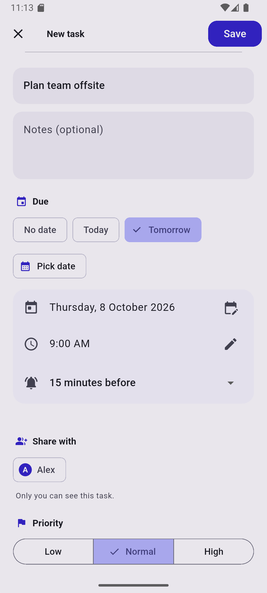
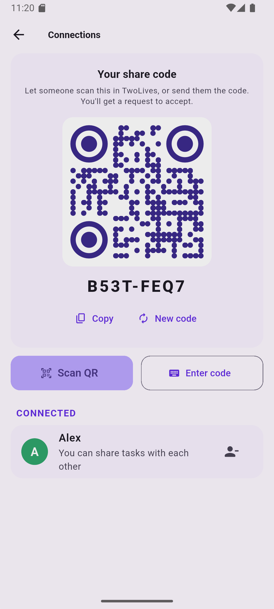
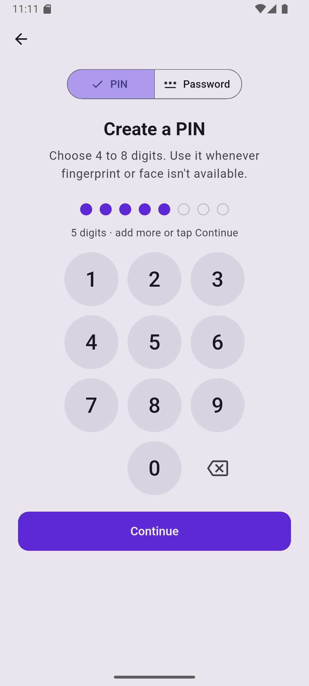
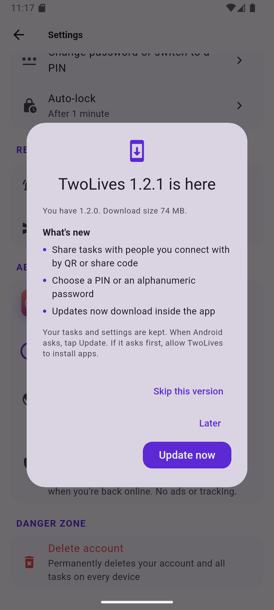

Keep your personal and professional tasks apart, get reminders on every phone, share tasks with the people you trust, and lock it all behind your fingerprint or face.
Home, health, family and everything you. Birthdays, bills and the cake you promised to pick up.
3 to do1 due todayWork, projects, meetings and career. Kept separate, so a Saturday doesn't fill up with Monday.
5 to do✓ 2 done todayEvery time you open it, TwoLives asks which life you're focusing on, then gets out of your way.
Unlock with your fingerprint or face, or a 4–8 digit PIN or password. It re-locks itself when you step away.
Sign in with Google or email and your tasks follow you to every phone. They work offline too.
Connect by scanning a QR code, then share a task. Either of you can tick it off, and you'll both know.
Get an alert at the due time or up to a day before, on every phone you're signed in on, even after a restart.
Finished tasks move to Done, grouped by day. Swipe to complete or delete, and undo if you change your mind.
TwoLives tells you when a new version is out, shows what changed, and installs it in a tap. Your tasks stay put.




The latest version for Android 7.0 and newer.
Download the APK
Every version is signed with the same TwoLives key, so updates install over the top and keep your data.
Certificate SHA-256: 7A:AB:31:AF:28:C7:66:5B:A4:4E:C8:2C:B5:7B:90:59:8A:2A:6F:EA:7D:8F:AB:12:01:5A:BF:FD:C2:44:28:86
Yes. There are no ads, subscriptions or in-app purchases.
Not yet. For now you install it from this page. Android will warn that it comes from outside the Play Store. That's normal for any app installed this way.
Only you, plus the people you choose to share a specific task with. Tasks are stored in your own account on Google Firebase (Sydney region), protected by security rules that only let you and those people read them. There's no tracking.
Your tasks are safe in your account. Sign out from the unlock screen, sign back in with Google or email, and set a new PIN or password.
TwoLives checks for new versions and shows you what's changed. Tap "Update now" and it downloads and opens the installer. You can also check any time in Settings → Check for updates.
Not yet. TwoLives is Android-only for now.